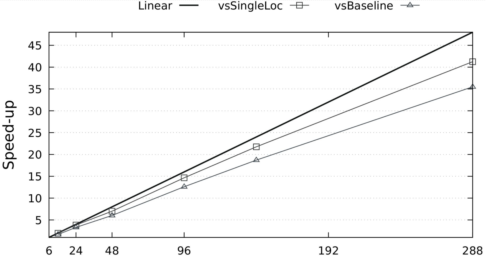
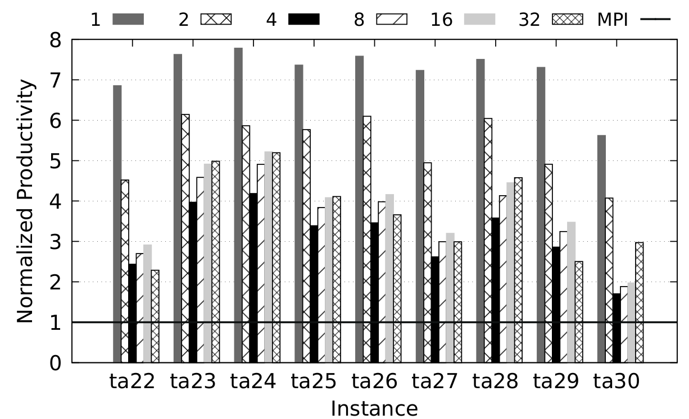

Parallel and distributed algorithms, GPU and heterogeneous computing, combinatorial optimization,
Download
the most recent paper :: Presentation
in The 8th Annual
Chapel Implementers and Users Workshop (CHIUW
2021) :: Powered
by Chapel :: Github
repository
The objective of the ChOp project to design and implement large-scale distributed optimization algorithms taking into account CPU-GPU heterogeneity, but also achieving high productivity and parallel efficiency. The prototypes are programmed to enumerate all feasible and complete configurations of the N-Queens. The final versions of the distributed algorithms solve to the optimality instances of combinatorial optimization problems, such as the flow-shop scheduling and the ATSP. This study is pioneering within the context of parallel exact optimization.
Overview of the algorithm: The locale 0 (master) is responsible for generating the distribute pool Pd and controlling the search. Each worker locale receives nodes from the master and generates a local pool that is partitioned into CPU and GPU portions. L locales are launched on L-1 computer nodes.
Recent results, GPU-based prototype in Chapel + CUDA,
solving the N-Queens: 288 NVIDIA V100, 48 computer
nodes. 84% of the linear speedup vs. the same application
on one computer node. 74% of the linear speedup vs. the
optimized baseline in CUDA on one computer node. See
Carneiro et al. (2021).

Some productivity/performance results of using Chapel for distributed exact optimization vs MPI+Cpp, flow-shop scheduling problem: Execution times of Chapel-BB solving to the optimality Taillard instances ta21-30. The execution time is given relative to the MPI-PBB baseline. Next, normalized the productivity achieved by Chapel compared to its counterpart written in MPI+Cpp. Experiments executed on 1 (32 cores) to 32 nodes (1024 cores). For more details, see Carneiro et al. (2020).

Some productivity results of using Chapel for heuristic optimization:Illustration of the trade-off between relative cost and relative performance of three languages compared to the reference one. In the graph, the arrows point to the desired productivity region (DPR). The trade-off between relative cost and relative performance of Chapel, Julia, and Python compared to the reference implementation. In the graph, the desired productivity region (DPR) is on point 1.2.33. For more details, see Gmys et al. (2020).
I received my Master’s degree in Computer Science from the State University of Ceará (Brazil) and my PhD in Computer Science – with international mobility at INRIA Lille (France) – from the Federal University of Ceará (Brazil). Since 2010, I research different topics related to parallel and distributed computing, mainly the use of heterogeneous architectures for solving combinatorial optimization problems.
Currently, I’m a research associate in the Parallel Computing & Optimization Group at the University of Luxembourg. My research is focused on the use of high-productivity languages for the design and implementation of large-scale distributed heterogeneous algorithms.
-- I've got a paper recently published in Vehicular Communications: A Context-Oriented Framework for Computation Offloading in Vehicular Edge Computing using WAVE and 5G Networks.
-- I received the Outstanding Paper Award from HPCS 2020 for the paper Towards Chapel-based Exascale Tree Search Algorithms: dealing with multiple GPU accelerators.
©Tiago Carneiro